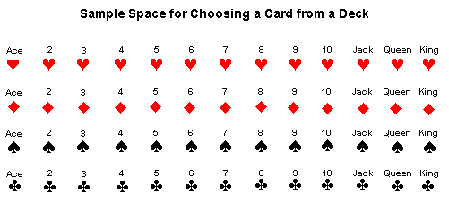
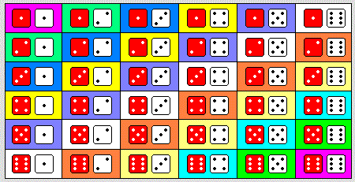
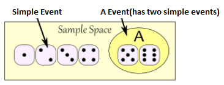
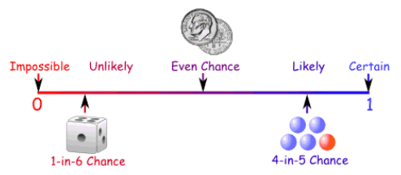
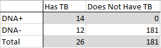
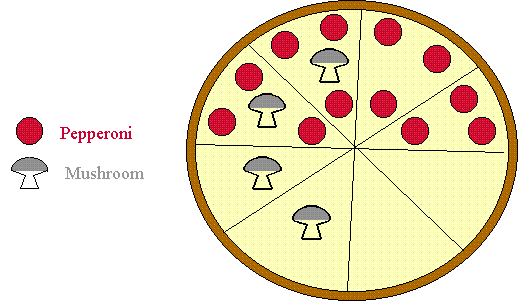
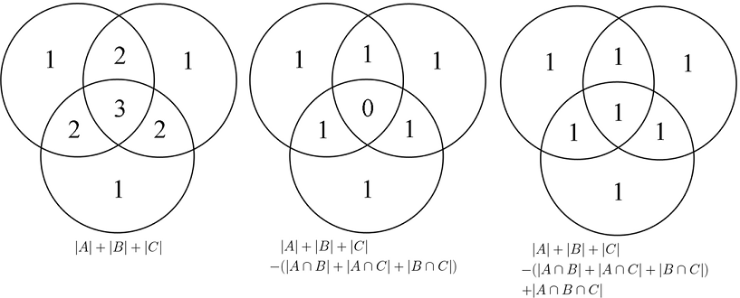

Ch.6 Probability
Table of Contents
6.1 Chance Experiments and Events
Many events, if not all, can't be predicted with total certainty.
- tossing a coin
- win/lose e.g. football game, president election
- weather forecasting (sunny, rain, haze..)
- accident (car, aircraft..)
- earthquake..
- financial market (Foreign exchange rates, Commodity..)
- lottery
- throwing dice, The Spinner
Chance experiment
Any activity or situation in which there is uncertainty about which of two or more possible outcomes will result.
Sample space
The collection of all possible outcomes of a chance experiment is the sample space for the experiment.
- { head, tail }
- { 1, 2, 3, 4, 5, 6 }
- Choosing a card from a deck

- two dice

Event
- Any collection of outcomes from the sample space of a chance experiment.
- A simple event is an event consisting of exactly one outcome.

- Ex. There are 5 marbles in a black box: 3 are blue and 2 are red. A boy picks up one marble in random order, stopping only when a blue marble has been selected.
- Display the possible outcomes of this chance experiment in a tree diagram.
- What outcomes are contained in the event A, that the boy picks up exactly one marble.
- What outcomes are contained in the event C, that the boy picks up exactly five marbles.
Operations on events
Let A and B denote two events.
- The complement of A (all experimental outcomes that are not in event A)
- The union of A and B (all experimental outcomes that are in at least one of the two events A and B)
- the intersection of A and B (all experimental outcomes that are in both of the event A dn B)
- Two events that have no common outcomes are said to be disjoint or mutually exclusive.
- Venn diagram (graph on pg. 285 or refer to wikipedia)
6.2 Definition of Probability
First, 100% sure for sth. inevitable. Second, 0 for sth. impossible. For others, it supposed to lie between 0 and 1. E.g. When tossing a coin, it is equally likely to get a head or a tail. so the probability of a head-up is just .5 by intuition.
Classical Approach to Probability
- e.g. tossing a coin
- e.g. the chances of rolling a "4" with a die
- e.g. there are 5 marbles in a bag: 4 are blue and 1 is red. What is the probability that a blue marble will be picked?
Probability Line

Relative Frequency Approach
- The probability of an event E is defined to be the value approached by the relative frequency of occurrence of E in a very long series of trials of a chance experiment. Thus, if the number of trials is quite large,
Probability does not tell us exactly what will happen, it is just a guide.
Exercise
- two coins vs. two universities
- A basket has 5 apples, 10 organges, and 5 bananas. What is the probability of pulling out an apple?
- The first roll of a die is two. What is the probability that the outcome of the second roll will be higher than the first roll?
- What is the probability that one of your classmates has the same birthday as yours?
Basic Properties of Probability (pg. 295)
Bean Machine
6.4 Conditional Probability
- good weather and good mood
- Let E and F be two events with P(F) > 0. The conditional probability of the event E given that the event F has occurred is denote by P(E|F).

- e.g. 6.15 (pg. 309, Chopin…)
 - e.g. 6.12 (pg. 304)
6.5 Independence
- traffic jam & financial market
- Definition of Independence
- Example

- If P(E|F)=P(E), it is also true that P(F|E)=P(F).
- Selecting Cards
6.6 General Probability Rules
Addition Rules
- Inclusion-exclusion principle

Multiplication Rules
- Monty Hall Problem
The Law of Total Probability
Consider a well shuffled card deck. What is the probability the second card in the deck is an ace?
Suppose we have two black boxes: one has 4 red balls and 6 blue balls, the other has 6 red and 4 blue. We toss a fair coin, if heads, pick a random ball from the first box, if tails from the second. What is the probability of getting a red ball?
A soccer team wins 60% of its games when it scores the first goal, and 10% of its games when the opposing team scores first. If the team scores the first goal about 30% of the time, what fraction of the games does it win?